Meta wanted to know if they could utilize the new LIDaR functionality on iPhones to enhance Metaverse experiences
When Apple added LIDAR to their iPhone range, Meta wanted to know if they could utilize it to enhance Metaverse experiences. Rather than designing a product to build, this project looked to understand:
- Why someone would want to 'bring their space to the metaverse'
- What technology requirements there would be to enable this
- What the UX might be for any new user-facing products
Understanding the potential
Due to the nature of this project, there was very little existing knowledge for us to gain insights from. To establish a base of understanding, I begand by executing a design sprint to gather current thinking from relevant stakeholders. From this, we were able to set the stage for the project, allowing engineers to set about answer unknowns around the technology, whilst we focused on identifying use cases.
Having uncovered several potential use cases for us to focus on, we soon found that too many led to vague and unclear answers. Identifying a priority use case was critical for us to be able to progress; and so armed with our initial concepts, we conducted research in the form of team interviews and lit reviews (of related previous research) to validate and refine our proposals.
Through this process, we landed on a clear winner (social connection) as well as allowing us to better define the landscape which we were operating in; not only helping us be more precise on our goals, but allowing parallel teams to better understand how our individual efforts relate.
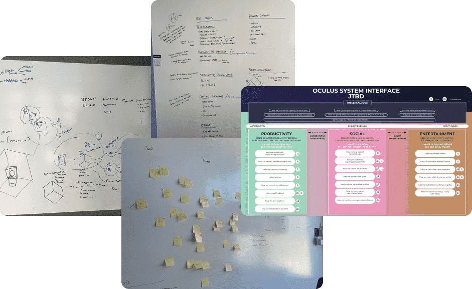 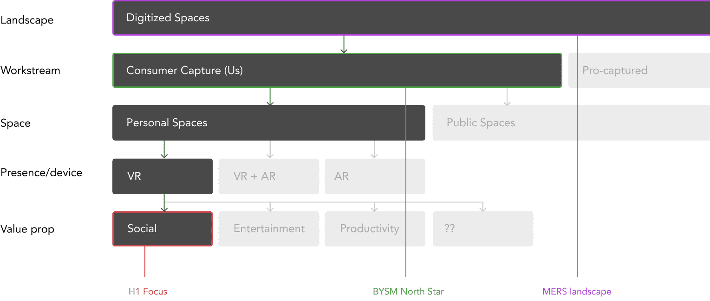Defining the requirements of capture
Discussing our findings so far with leadership confirmed the direction we were taking, allowing us to start exploring what a user might want from the process of digitizing their space. From a long list, the primary considerations were:
- Privacy (eg retaining control over what is/isn't shared)
- Personalization (allowing users to customize their space whilst retaining the basic physical dimensions - informed by our research on social connection use cases)
- Effort (minimizing the amount of time to capture their space)
Initial assumptions were that we would be using the technology to capture a single photogrammetric mesh. However, having developed an understanding about the requirements, when we revisited this, we realized that this wouldn't be an optimal solution for our needs:
- The time it would take to capture a high enough fidelity mesh would deter users, and any resultant mesh would be of a size that would cause complications with storage and transfer
- Being a single mesh made privacy control harder (eg to block out single objects or details)
- Personalization possibilities would be limited
At this stage we asked leadership if we should pivot and find a use case to match the single mesh solution. As we had been thorough in our early investigations, the confident answer was to stay on course and determine what would be required for an optimal user experience.
Redefining Capture
What followed was a lot of collaboration with the engineering teams to understand what our options were. However, with our now precise requirements, we were able to define a new capture solution that was technically possible (within a reasonable time frame) and met our user needs (eg quicker basic capture, object-level privacy control).
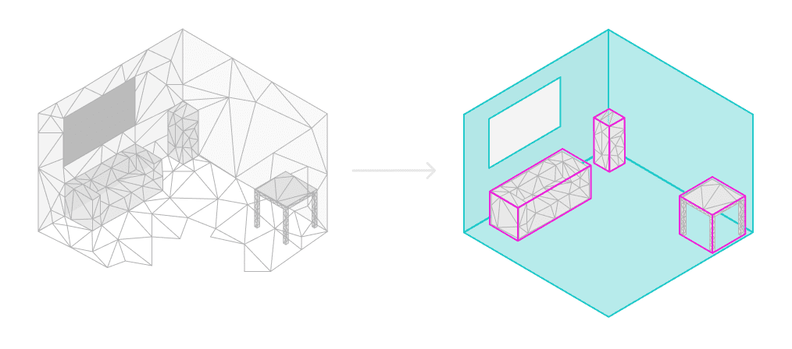Rather than capture a single mesh of an entire space, using semantic recognition we could create meshes of individual features and objects. This would result in a lighter-weight mesh that could be expanded/edited over time with granular, object-level control, allowing users to create a range of digitized versions of their space depending on their needs:
- "Lifelike" - created solely from textures and 3D meshes captured by the from within their space
- "Stylized" - using realistic stock textures and CAD models to create an accurate but 'cleaner' reconstruction
- "Customized" - allowing artistic freedom, but retaining the physical layout
Defining a capture UX
Having established the capture requirements, we were able to define the core components of the capture experience:
- Room layout and object volumes
- Textures
- Object meshes
From these, high level flow options were identified to provide guidance for more detailed flows through mockups. (Getting to higher fidelity quickly allowed us to shorten the feedback loop with engineers, which was critical given the technical aspect of the project). These explored many options from different technologies, to phone-and-headset flows, and even looking at phone-to-VR Metaverse experiences.
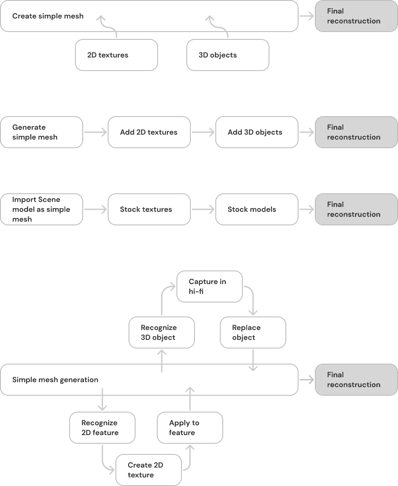 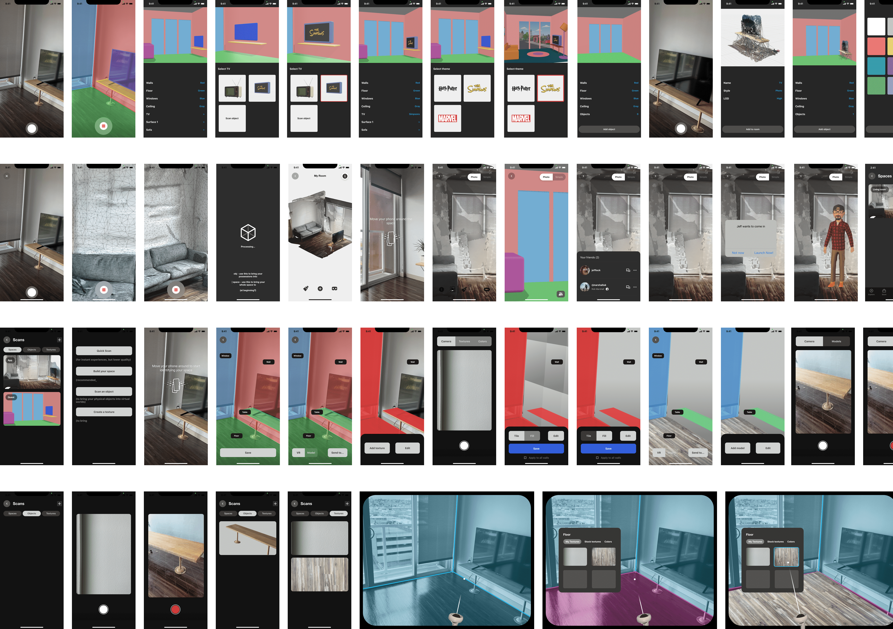Through a process of elimination and the refining of a potential solution, I started to create Figma prototypes to better simulate the experience. This allowed us to gather feedback on the usability of the product and start to give an understanding of how it would be used alongside the existing hardware (eg Quest VR headset) and software (eg Quest app).
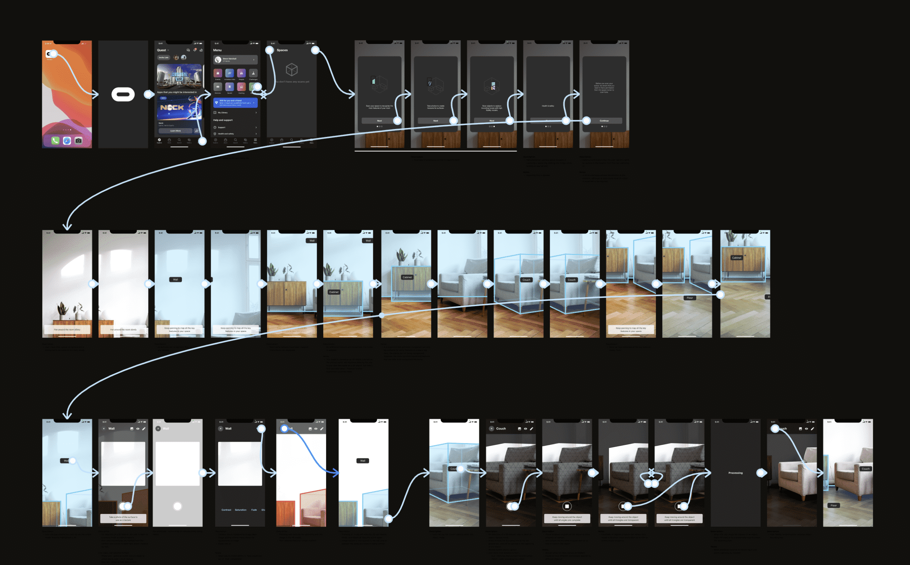Finalizing the requirements for LIDaR capture
One aspect we were concious of throughout the project was the labor-intensive nature of removing your VR headset, capturing a space with a phone, then returning to VR. As such, we wanted to ensure that time away from VR was minimized as much as possible. To do this, we proposed a non-linear process that allowed a user to capture as much or as little of their space as they wanted.
- Scan the space to detect 2D surfaces and object volumes
- Capture textures to customize surfaces and/or volumes
- Scan objects to create 3D models to replace low-fidelity volumes


This process allowed users to just scan for 2D surfaces and object volumes, that could then be used in a VR experience. Over time, the user could then return to the mobile app to continue capturing and adding fidelity to their digitized world.
 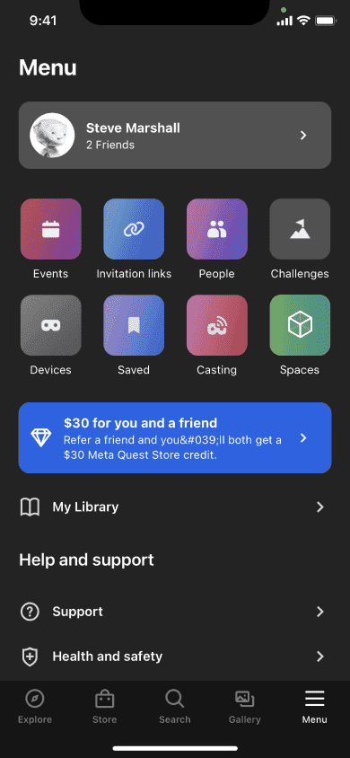 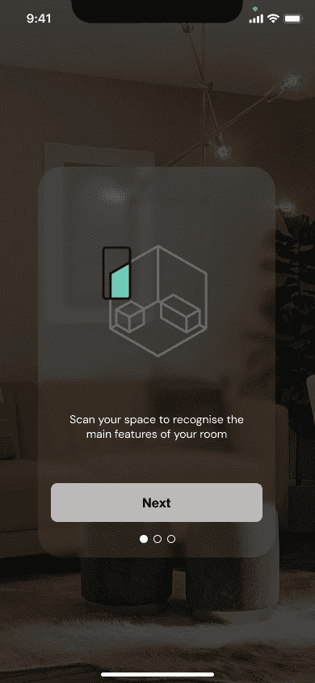 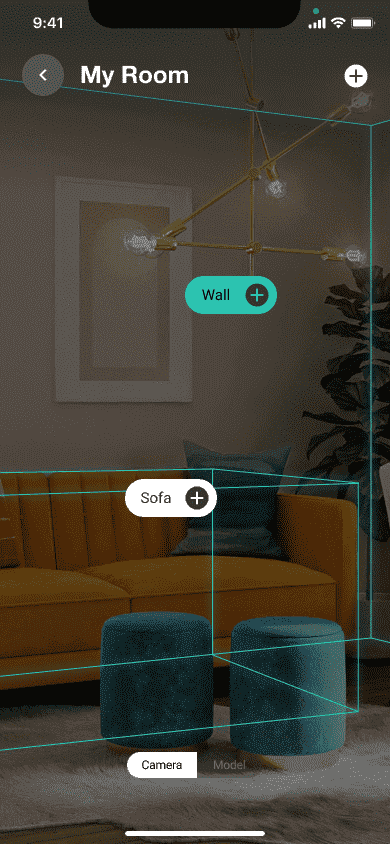 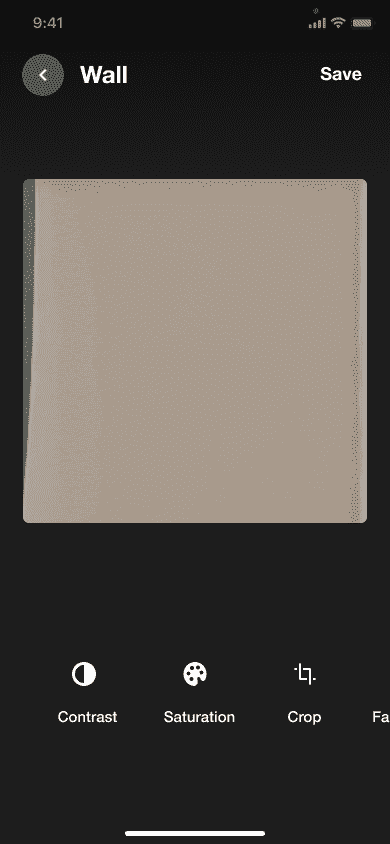 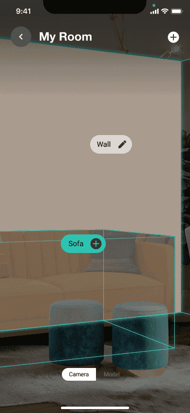 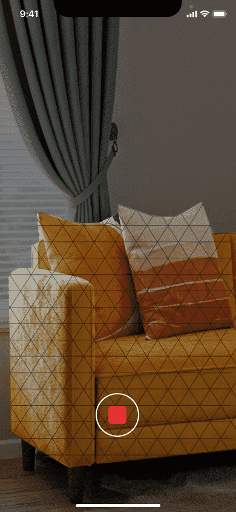Conclusions
As this was an exploratory project, our end goal wasn't to provide final design deliverables, rather provide robust insights from which leadership could make informed strategic decisions. Through the identification of a validated use case, as well as the documentation of the technical requirements and the user considerations to maximise its chance of success, we were able to provide valuable understanding and intuition within this opportunity space.
Although our work incited excitement across multiple fronts, our own findings contributed to the discontinuation of this project. As we had established that a single mesh wasn't suitable for our identified use cases, the technology required for our proposed solution was largely possible via VR headsets. Rather than continue work on a mobile solution, our work here instead helped inform the future of capture on VR headsets.